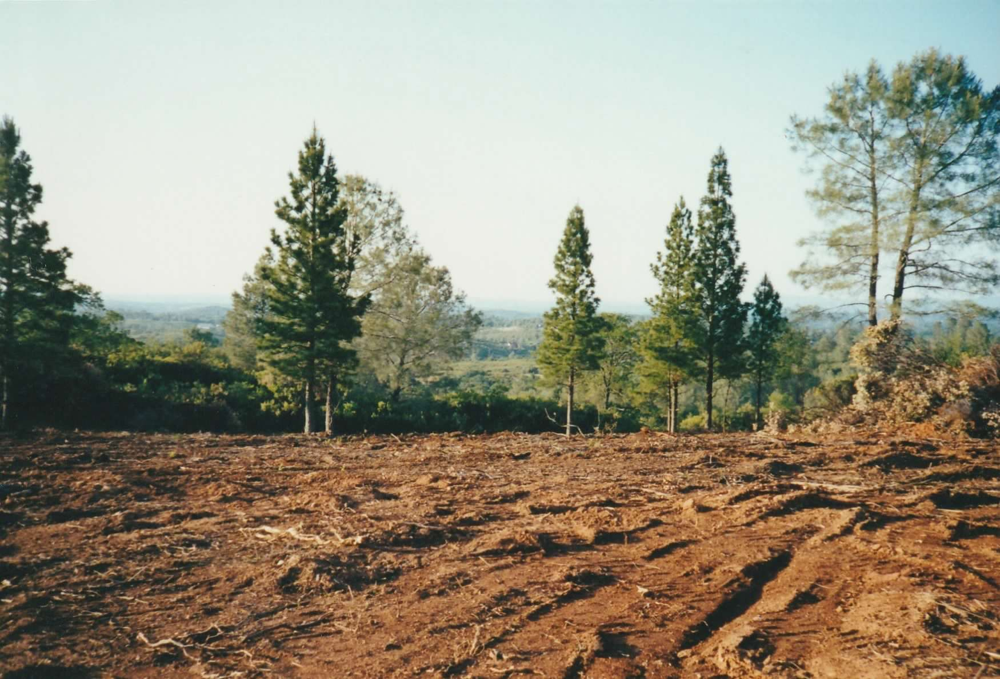
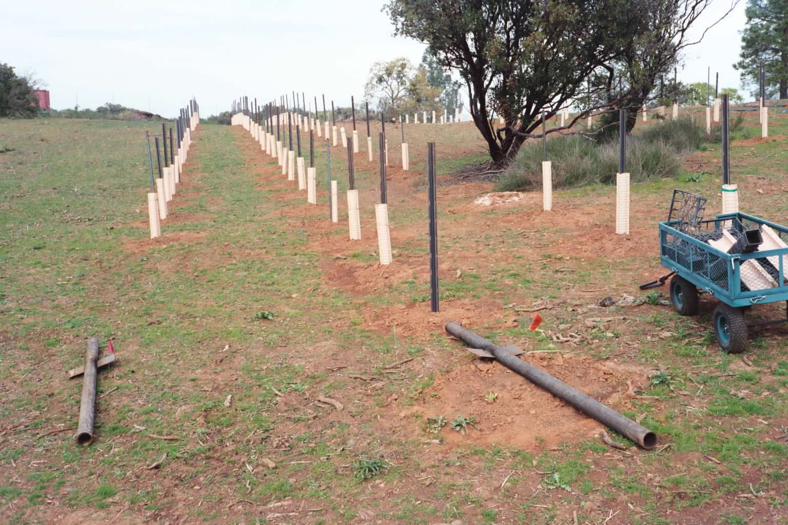
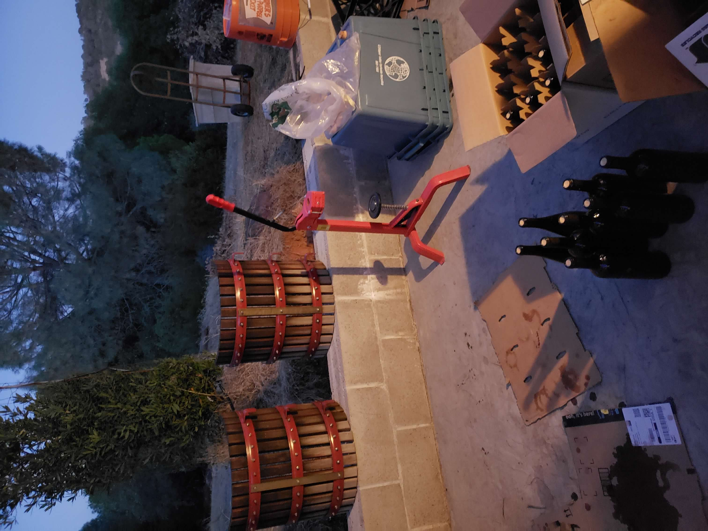

Our Vineyard
A Glimpse of the Estate

Spring — Florescence

Summer — Golden Hour

Fall — Harvest

Winter — Dormancy
Estate Grown · Organically Farmed
Nestled in the foothills of El Dorado County, crafting Zinfandel and Primitivo from vines over two decades old.
Explore the EstateOur Story
Dancing Hawk Vineyard is a family-run estate in the foothills of El Dorado County, dedicated to organically grown Zinfandel and Primitivo. Every vine is over two decades old, tended by hand through every season.
Whether you're a fellow grower, a vendor partner, or simply a lover of fine wine — welcome to Dancing Hawk.
Our Story
The Site
Like all good stories, ours begins with the location.
Our vineyard sits in El Dorado County, near the town of El Dorado, nestled within the Sierra Foothills AVA at 1,735 feet elevation. As they say out here, we're above the fog and below the snow. Neither is strictly true, but fog and snow days are few, and the valley fog often creeps right to the lowest edge of the vines.
The property was chosen for three things: to build our home, plant our vineyard, and take in the views. To the west, the Big Canyon Reservoir, Rancho Seco, and the Sacramento Valley stretch all the way to Mt. Diablo. Pilot Hill anchors the northern skyline, and the snow-capped Crystal Range of the Sierra Nevada defines the east.

The Vineyard
The land was cleared, the home was built, and the vineyard was laid out by hand. Every post, wire, and vine placed ourselves.
The 2.5-acre vineyard sits on a ridge in what we call a double saddle, shaped something like a Pringles chip. It dips east and west, rises north and south, with not a single level stretch of ground to be found. The rows run nearly true north to south, which serves the vines well. Cooling breezes roll down from the Sierras each night, giving way to warm valley air during the day. The fruit gets balanced hours of sun and shade, and equipment can run up and down the slope without fighting the terrain.
Our Auburn-Series soil is shallow and rocky, perforated by ridges of Greenstone we call the dragon spines, running the same direction as our rows. Rather than blast them out or route around them, we incorporated them right into the vineyard.
The farming is fully organic. No tilling, no disking, no insecticides. Native grasses and wildflowers are left to seed between the rows, keeping a healthy insect population that tends to take care of itself.

The Grapes
Zinfandel and Primitivo were chosen for their love of heat, their deep roots in the region, and a personal passion for what Zinfandel becomes in a glass.
Summers here are hot and dry. Triple-digit days are common, and from May through November there is rarely a drop of rain. All vines are planted on 1103P rootstock, chosen for drought tolerance and adaptability to our sparse, rocky soil.
We practice deficit irrigation, giving the vines just enough water to keep from burning off at the shoot tips and not a drop more. Winter rain is collected and stored; well water is used only as a last resort. The stress this puts on the vines is intentional. Smaller berries, more concentrated flavor, earlier ripening.
By Labor Day, the Zinfandel is typically ready at around 24° Brix and 3.7 pH. Leave it a few weeks longer and we've seen it climb as high as 33° Brix. Rich, powerful, and entirely this place.

Our Vineyard
Spring — Florescence
Summer — Golden Hour
Fall — Harvest
Winter — Dormancy
About the Vineyard
Dancing Hawk Vineyard is owned and operated by Ken Johnson — viticulturalist, grower, and home winemaker operating out of El Dorado County, California.
The estate grows two varietals: Zinfandel from an old vine clone originating in Monterey circa 1860, and Primitivo Clone 3 from UC Davis. Both are organically farmed on 23-year-old vines grown on 1103P rootstock.
Grapes sourced from Dancing Hawk have gone on to win awards at the El Dorado County Fair, Amador County Fair, and Sacramento State Fair.
Trade inquiries, vendor partnerships, and general questions welcome.